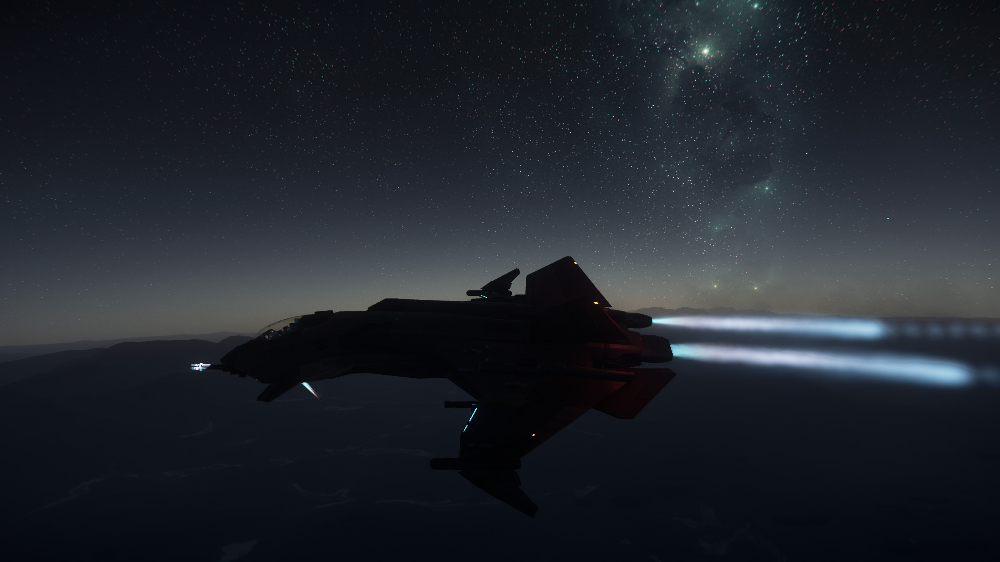
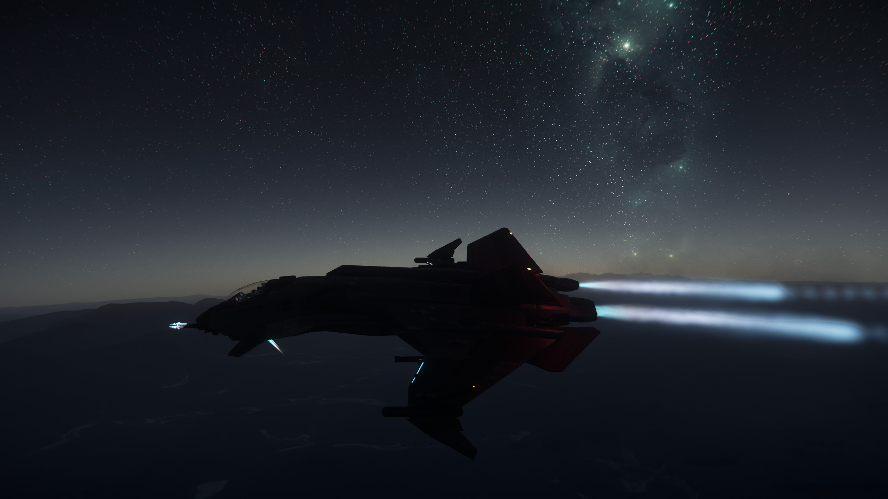

Lore
The year was 2935, in Crusader's fourth rotation around Stanton. While on a mining expedition in the asteroid belt around the Crusader moon, Yela, ex Counter-Terrorist operative Edward Cutter was attacked by the vicious Nine Tails and left for dead. Local security services managed to pick up his weak destress signal, but it was a long time before he fully recovered from the incident. He had no ship, no money, and nowhere to go, but he had one last burning resolution: never again would he be caught alone or be unable to retaliate against his enemies.
Ten years later, this ex-operative was controlling North Wind Corps., one of the most efficient contracted security organisations in the Stanton system. However, due to the relentless nature of the Nine Tails pirates, and the economic powerhouse that Stanton had become, there were countless other PMC's looking to make a name for themselves. Competition was stiff. However, Eddy's work was his life and his passion was visible in the performance of the organisation. This did not go unnoticed. After an influx of applications from citizens looking to jump from monotonous occupations into the exciting PMC industry, there was an opportunity for the NWC leadership to gain an edge over their competition. They decided to open internal sectors to include small-scale operations run by these new-found employees who were experts in trading, mining, and scrapping, amongst other occupations. Thanks to this ground-breaking decision for a Security company, NWC continued to expand its influence and economic pull and has developed into a strong company that is fully self-sustaining and capable of protecting all its clients, as well as each and every one of it's members.
A few years later and you're looking at one of the most efficient and lethal security companies, operating with cutting-edge tech and top-of-the-line equipment. NWC is a stand out organisation and will protect you anywhere, anytime.
"You could say the pirates and I are well acquainted; just like an ant and a boot"
• Eddy 'Snarbal' Cutter

 
